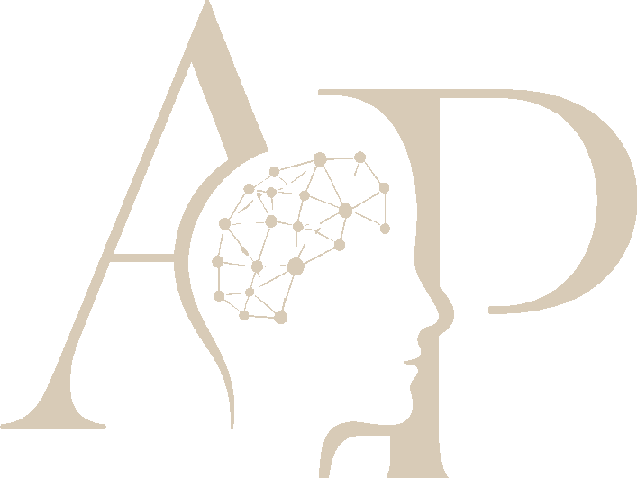

Aleksandar Plavsic
Psiholog
Razumeti danas.
Bolje odluke sutra.
Psihološka podrška za pojedince i organizacije koje se suočavaju sa pritiskom, emocionalnim preplavljivanjem, burnoutom, stresom na poslu, odgovornošću i promenama.
Kako radim
Psihološka podrška sa emocionalnom dubinom i praktičnim pristupom.
Početi od onoga što je teško
Usporavamo dovoljno da razumemo šta nosiš i kako to utiče na svakodnevni život.
Razumeti kontekst
Stres se posmatra u odnosu na posao, odnose, identitet, odgovornost i okruženja u kojima ljudi žive.
Make insight usable
Rad povezuje refleksiju sa jasnijim odlukama, zdravijim granicama, komunikacijom i održivim rutinama.
Stay evidence-informed
Psihološko znanje se primenjuje prizemljeno, bez pretvaranja sesija u akademsku teoriju.
Client feedback
Šta klijenti često cene u procesu.
„Prvi put sam razgovarao/la sa psihologom i imao/la sam zadršku jer nisam znao/la kako će proces izgledati. Razgovori su delovali prirodno, sa poštovanjem i lako za praćenje. Nisam se osećao/la osuđeno niti etiketirano, što mi je pomoglo da se postepeno otvorim.”
First-time therapy client based in Serbia„Javio/la sam se dok sam radio/la na zahtevnoj poziciji u američkoj kompaniji. U početku sam mislio/la da je to samo stres na poslu, ali su mi sesije pomogle da razumem koliko pritiska nosim generalno. Imao/la sam osećaj da mogu otvoreno da govorim i da posle sesije imam nešto korisno o čemu mogu da razmišljam.”
International client working for an American company“As an expat based in Barcelona, I was struggling with adjustment, language, and feeling settled in a new environment. Being able to speak in English and Spanish made a big difference. Aleksandar’s language skills are excellent and helped me explain things much more naturally.”
Expat client based in Barcelona“I was dealing with questions around identity and relationships, and it helped that the space felt understanding and LGBTQ+ friendly without making that the whole focus. I felt respected, listened to, and able to talk about things honestly.”
Client based in SerbiaFor Individuals
Support for stress, emotional overwhelm, relationships, identity, transitions, and work-related pressure. LGBTQ+ friendly and available for local and international clients.
For Organizations
Workplace wellbeing, burnout prevention, and psychologically informed support for teams, leaders, clinics, and wellbeing initiatives.
Radionice & Speaking
Practical sessions on burnout, emotional overload, stress, communication, and psychological sustainability in demanding environments.
Public mental health work
Javni razgovori o mentalnom zdravlju i psihološkoj podršci.
Dosadašnji rad uključuje medijske nastupe, javne diskusije, intervjue i inicijative usmerene na emocionalnu dobrobit, stres na poslu, burnout i psihološku podršku.


Otvoren za saradnju sa klinikama, organizacijama i zajednicama.
Dostupan za uvodne razgovore sa klinikama, organizacijama, EAP pružaocima usluga, coworking zajednicama i javnim inicijativama za dobrobit.
Razgovor o saradnji ↗